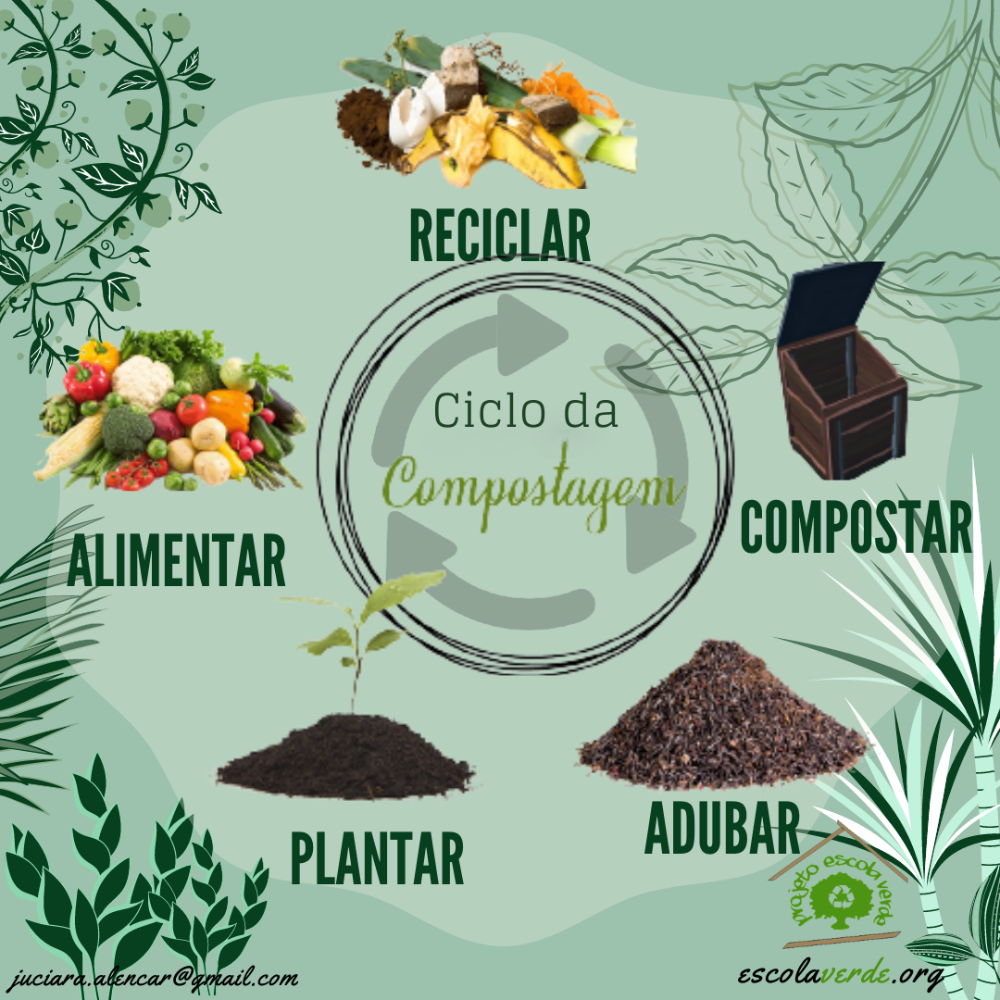

- Replantio de Árvores Nativas: Incentivar o plantio de espécies locais para aumentar a biodiversidade e fortalecer o ecossistema

- Criação de Trilhas Ecológicas: Implementar trilhas bem demarcadas para passeios a pé e ciclismo, promovendo a interação com a natureza sem causar danos.
- Educação Ambiental: Realizar workshops e atividades educativas para a comunidade sobre a importância da preservação ambiental.
- Espaços de Lazer: Criar áreas de descanso, como bancos e mesas, para que as pessoas possam desfrutar do espaço de forma mais agradável.

- Coleta Seletiva de Lixo: Instalar lixeiras para reciclagem, incentivando a correta destinação dos resíduos.

- Programas de Voluntariado:Engajar a comunidade em mutirões para limpeza e manutenção do bosque, promovendo o senso de pertencimento.

- Jardins de Polinizadores: Criar áreas específicas com flores que atraem abelhas e borboletas, promovendo a polinização e a biodiversidade.
- Monitoramento da Fauna: Instalar câmeras ou promover atividades de observação para monitorar a vida selvagem local, incentivando a conservação.
- Programas de Reciclagem e Compostagem: Implementar iniciativas que incentivem a compostagem de resíduos orgânicos e a reutilização de materiais.

- Eventos Culturais e Artísticos: Organizar feiras, apresentações musicais e exposições de arte ao ar livre para atrair a comunidade e valorizar a cultura local.
- Acessibilidade: Melhorar o acesso para pessoas com mobilidade reduzida, garantindo que todos possam desfrutar do espaço.

- Sinalização Ecológica: Colocar placas informativas sobre a flora e fauna locais, educando os visitantes sobre a importância de preservar esses elementos.
- Espaços para Atividades Físicas: Criar áreas com equipamentos de ginástica ao ar livre ou espaços para ioga e meditação, promovendo o bem-estar físico e mental.

Voltar à História